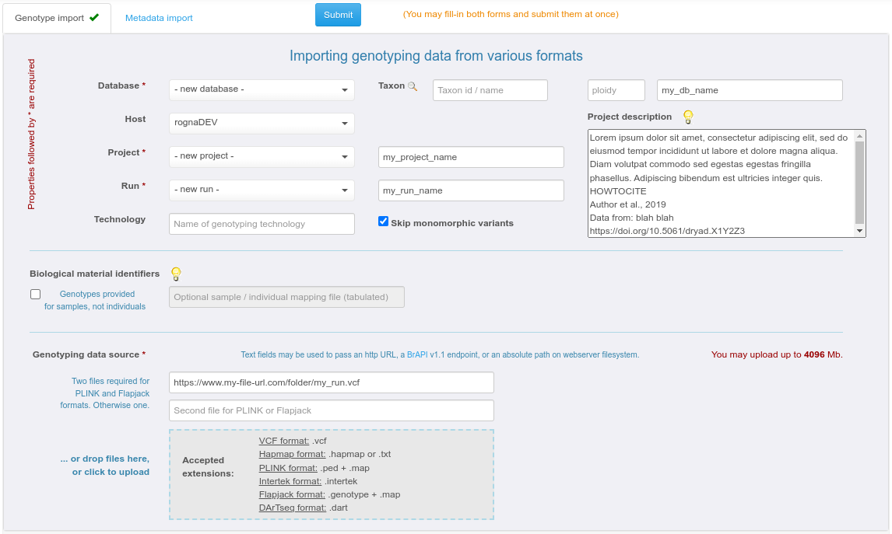
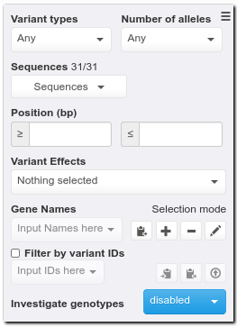
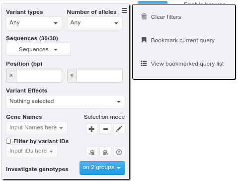
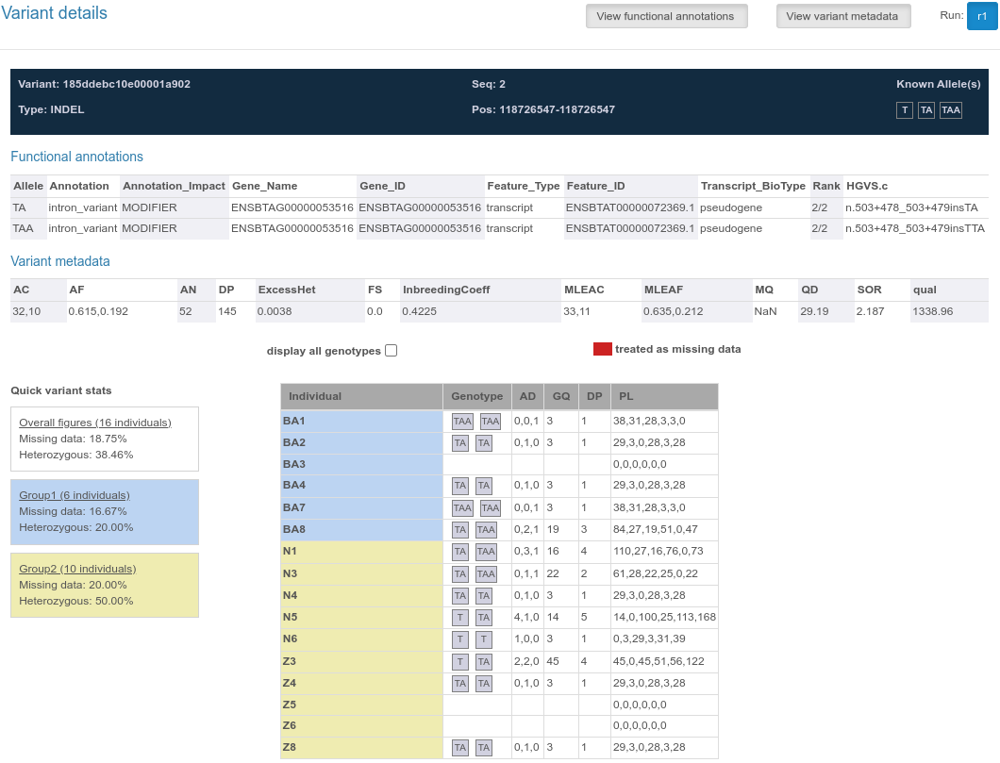
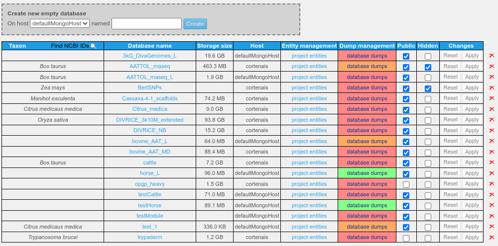
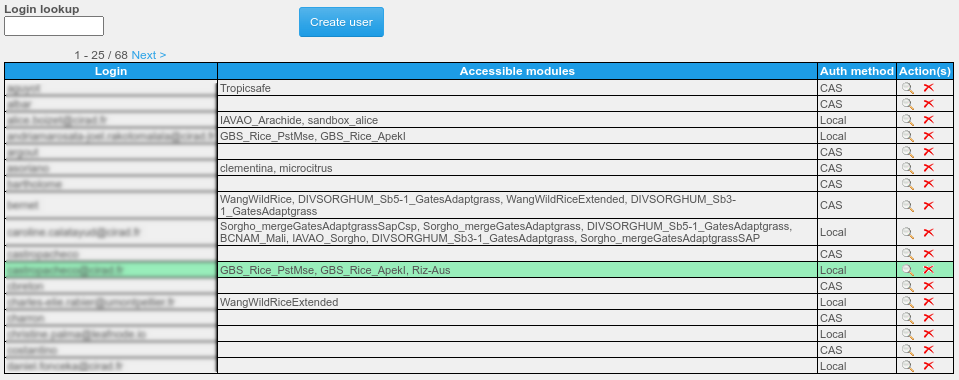

Gigwa v2.4 – Documentation
Learn how to use Gigwa like a pro in a few minutes!
Watch demonstration videos on the project homepage:
http://www.southgreen.fr/content/gigwa
A/ USER DOCUMENTATION
A1/ IMPORTING DATA
Choosing “Manage data” then “Import data” from the main horizontal menu leads to a page dedicated to data imports.
Anonymous users and users with no particular permissions are limited to importing genotyping data into temporary databases that remain accessible for 24h. These databases are hidden (only visible to people knowing their precise URL and to administrators).
In the case where the importing person is logged in as administrator or as a user with permissions to write into a permanent database, a tabset allows choosing between importing genotyping data or metadata.
Genotyping data may be provided in various formats (VCF, HapMap, PLINK, BrAPI) and in various ways:
By specifying an absolute path on the webserver filesystem (convenient for administrators managing a production instance used as data portal);
By uploading files from the client computer (with an adjustable size limit: see section B6.2);
By providing an http URL, linking either to data files or to a BrAPI v1.1 base-url.
On the genotyping data import page, 3 more fields are required:
Database (not available to anonymous users since a "disposable" database is automatically generated for them): a database may contain one or several projects as long as they all rely on the same reference assembly. In the case of very large datasets, for performance-related matters it is however advised to have a single project per database;
Project: a project may contain one or several runs;
Run: each import process ends up writing a run into a project. Allowing multiple runs in a project is a way of supporting incremental data loading.
A descriptive text can be provided for each project. A tooltipped lightbulb icon explains how to add a how-to-cite text that would then be exported along with any data extracted from the given project.
Genotyping data import progress can be watched in real time from the upload page, or via a dedicated asynchronous progress page (convenient for large datasets), as imports run as background processes and may not be interrupted by users.
Providing individual metadata is only supported for existing databases and aims at enabling users to select them by filtering on that metadata. This is convenient for cases where the individual list is long and / or individual names are not meaningful.
Metadata may be provided as a simple tabulated file containing user-defined columns (only one is enforced, named "individual"). Import via BrAPI v1 is also supported assuming that germplasmDbId values have been provided beforehand. It is able to extract single-string germplasm fields and attributes from BrAPI sources.
A2/ WORKING WITH GENOTYPING DATA
From the home page, select a database and a project. Note the presence of an “Enable browse and export” checkbox that toggles between a mode where only variant counts are displayed, and one where users may browse, visualize and export selected data.
A2.1/ GENERAL FILTERING FEATURES
By default, a single grey filter panel appears, providing means to select variants based on their inherent attributes:
variant type (i.e. SNP, INDEL…);
sequence;
position;
if applicable, number of known alleles (when several are represented);
if applicable, functional annotations (if the data was provided as a SnpEff or VEP-annotated VCF file).
As a general rule, a filter widget where no selection has been made will behave as if all its items were selected (no filtering applied on that field).
A2.2/ GROUP COMPARISON
At the bottom of this panel, a dropdown button may be used to display one or two additional panels that allow for more advanced filtering features based on a subset of individuals either in one or two distinct groups.
Both of these panels have the same contents and each one lets users select a list of individuals (thus defining groups 1 and 2). Additionally, some handy tools are available on the right side of the “Individuals” drop down menu as tooltipped icons:
 Activating the disk icon allows the current selection of
individuals to be memorized within the web browser;
Activating the disk icon allows the current selection of
individuals to be memorized within the web browser;
 The
magnifier icon (only present when metadata are available)
helps selecting individuals according to the metadata attached to
them;
The
magnifier icon (only present when metadata are available)
helps selecting individuals according to the metadata attached to
them;
 The
copy icon adds currently selected individuals to clipboard;
The
copy icon adds currently selected individuals to clipboard;
 Clicking
the paste icon opens a textbox for pasting / editing a
list of individuals to select.
Clicking
the paste icon opens a textbox for pasting / editing a
list of individuals to select.
All other widgets in the same panel will then let users apply genotype-level filters on the selected list of individuals:
In the case where data was provided in VCF format containing numeric genotype-level fields (e.g. depth, genotype quality), a minimum acceptable value may be provided for each of them. Any genotype not respecting thus defined constraints is treated as missing for the rest of the query;
“Max missing data” ratio defines how many individuals (among the selected ones) may have a missing genotype;
“Minor allele frequency” can be provided as a range (only supported for bi-allelic data);
The “Genotype pattern” dropdown provides a list of genotype patterns that may be applied within the group. Descriptions for those are available via the question-mark icon.
Useful tip: To identify variants for which genotypes are steady within each group but different between them, set both groups’ genotype pattern to “All or mostly the same”. In this case, in each group panel a similarity ratio lets users specify how many of the current group’s selected individuals must have the same genotype. Additionally, an extra pink panel appears between both group panels, containing a checkbox labelled “Discriminate groups”. Checking this box will ensure that the most frequent genotype in group 1 is different from that in group 2. See online video number 4 for a demonstration.
Note that genotype-level filters are applied in the order they appear: the maximum missing data filter applies first, taking into account truly missing data and genotypes treated as missing because of low quality. MAF and genotype pattern queries are then applied at the same time, on the remaining (non-missing) genotypes only.
A2.3/ BOOKMARKING QUERIES
After executing a query, any logged-in user may bookmark it from the hamburger menu. Each bookmarked query needs to be given a name and thus users may:
consult their list of bookmarked queries;
load one of them at any time to be able to re-run it;
rename them;
discard them.
A2.4/ BROWSING / VISUALIZING VARIANTS
If the “Enable browse and export” box is ticked when clicking the Search button, then one may browse online the selection (i.e. list of variants that match the query). Clicking a variant line opens a dialog providing variant details along with individuals’ genotypes and optional complementary information like quality data or annotations.
Above the variant list:
A density chart icon leads to a dialog in which the variant distribution may be observed for each sequence represented in the selection. In the case where data was provided in VCF format containing numeric genotype-level fields (e.g. depth, genotype quality) an additional series can be displayed for each of these fields, on top of the default density series;

 An “External tools” box provides
means to setup the application for interacting with / pushing data into external
tools: an online genome browser can be configured for viewing
each variant in its genomic context (via an extra icon at the end
of each table row); a running standalone instance of IGV can be fed with a
VCF export file (refer to tooltip for details); online tools
(e.g. Galaxy) can also be fed using exported files (click
online-output-tools icon for details);
An “External tools” box provides
means to setup the application for interacting with / pushing data into external
tools: an online genome browser can be configured for viewing
each variant in its genomic context (via an extra icon at the end
of each table row); a running standalone instance of IGV can be fed with a
VCF export file (refer to tooltip for details); online tools
(e.g. Galaxy) can also be fed using exported files (click
online-output-tools icon for details);
 Clicking the download button opens a panel where users may select an output
format, refine the list of individuals to export, select individual metadata fields to include (if available), and choose
between directly downloading the output, or creating a file on
the server (in which case its URL may be used later, shared or
passed to external tools). A prototype version of Flapjack-Bytes
(© JHI) is embedded and may be switched to after exporting into
Flapjack format with the "Keep files on server" option (similarly to
the way in which IGV can be invoked with VCF exports).
Clicking the download button opens a panel where users may select an output
format, refine the list of individuals to export, select individual metadata fields to include (if available), and choose
between directly downloading the output, or creating a file on
the server (in which case its URL may be used later, shared or
passed to external tools). A prototype version of Flapjack-Bytes
(© JHI) is embedded and may be switched to after exporting into
Flapjack format with the "Keep files on server" option (similarly to
the way in which IGV can be invoked with VCF exports).
A3/ WORKING WITH REST APIs (for advanced users)
Any data imported into Gigwa is automatically interfaced via the following standard REST APIs, documented in a Swagger page available from the main menu:
The GA4GH v0.6.0a5 implementation has by design a single base-url. Listing available databases can be achieved by posting an empty body to /rest/ga4gh/referencesets/search. Thus obtained values can be then passed to other calls as referencesetId or datasetId.
The BrAPI v2.0 implementation has by design a single base-url. Listing available databases can be achieved by posting an empty body to /gigwa2/rest/brapi/v2/programs or /gigwa2/rest/brapi/v2/trials. Thus obtained values can be then passed to other calls as programDbId or trialDbId.
The BrAPI v1.1 implementation has by design a separate base-url for each database, constructed as follows: /{database}/brapi/v1/token. Each database’s base-url can be deducted from the above-mentioned calls’ responses, and by convenience, the main Gigwa interface provides a link to the corresponding BrAPI base-url when a new database is selected.
The table below lists terminology correspondences:
| Gigwa entity | GA4GH entity | BrAPI v1 entity | BrAPI v2 entity |
|---|---|---|---|
| database or module | referenceSet or dataset | database or map | program or trial |
| project | variantSet | genotyping study | genotyping study or referenceSet |
| run | - | - | variantSet |
| sequence | reference | linkageGroup | reference |
| variant | variant | marker | variant |
| individual | callSet | germplasm | germplasm |
| sample | - | sample or markerprofile | sample or callSet |
Please refer to http://ga4gh-schemas.readthedocs.io/en/latest/ and https://brapi.org/ for more details about each API.
B/ ADMINISTRATOR DOCUMENTATION
By default, a fresh instance of Gigwa comes with a single pre-defined administrator account (login: gigwadmin, password: nimda). It is of course strongly advised to change this password upon first connection (see section B5 below).
B1/ TOMCAT CONFIGURATION
Ready-to-use bundled packages should not require any changes in Tomcat configuration since the settings below have already been applied to them. However, if you install Gigwa in a production environment from fresh Tomcat binaries, it is necessary to apply the following modifications:
The bin/setenv.bat or bin/setenv.sh
(depending on the platform) script must contain a line as follows
in order to reserve enough RAM for Tomcat:
export CATALINA_OPTS="$CATALINA_OPTS -Xms512m -Xmx2048m" (Ubuntu / OSX)
set "JAVA_OPTS=%JAVA_OPTS% -Xms512m -Xmx2048m" (Windows)
(This setting may of course be
adapted to get the best out of the hardware configuration)
In the conf/server.xml file, the main
Connector element must be configured as below:
maxHttpHeaderSize="65536"
maxParameterCount="-1" maxPostSize="-1"
B2/ APACHE CONFIGURATION
In production environments, Tomcat often runs behind an Apache proxy. If such is your case, you must include the following line in your VirtualHost configuration:
ProxyTimeout 86400
Otherwise, when Gigwa is undertaking a process that is meant to last long, Apache may stop waiting for Tomcat to respond, and the interface will fail in displaying results.
B3/ ENABLING PASSWORD ENCRYPTION
User information is stored in WEB-INF/classes/users.properties. By default, passwords are not encoded. Administrator may enable password encoding to enhance security by:
B4/ MANAGING DATA
The visibility of a database is defined using two flags (default values in bold):
public / private: if public, anyone (even anonymous users) can search this database; if private, only administrators and users who were explicitly granted permissions may do so;
hidden / exposed: if hidden, only administrators will see the database in the main menu list; if exposed, any entitled user (that is, anyone if database is public, otherwise any user with permissions on at least one of the database’s projects) will see it in the list.
In other words, the first flag defines visibility on the server side while the second defines exposure on the client side. Typically, a temporary database created by an anonymous user or a user without any management permissions will be public and hidden (searchable by anyone, listed to the administrators only), and will be made accessible to its creator via a specific URL referring to the database name (thus accessible to anyone if shared).
Administrators can see all databases (even if private and/or hidden) and have all privileges on them. Only administrators may create permanent databases. This can be done either at import time, or via the main menu’s “Manage data” link, by subsequently clicking on “Manage databases”. A simple interface allows then to create an empty database on a selected MongoDB host, set the public and hidden flags on existing databases, and delete existing projects and databases.

B5/ MANAGING USER ACCOUNTS AND PERMISSIONS
By choosing the “Administer existing data and user permissions” link from the “Manage data“ menu item and subsequently clicking on “Manage users and permissions”, administrators may access an interface for creating / deleting users, setting their password (even their own), and setting their permissions:
at the database level by allowing to import new projects into it (any user importing a new project will be automatically granted the MANAGER role on it);
at the project level by granting either the READER role (only makes sense for projects in private databases) which allows to search this project’s data, or the MANAGER role which allows to search project data, import metadata, and grant roles to existing users on that project.
Indeed, a user with the MANAGER role on a project can administer that project in the same way as an administrator, via the main menu’s “Manage data” item also available to him after authentication.
B6/ CONFIGURING ADVANCED SETTINGS (FOR SYSTEM ADMINISTRATORS: REQUIRES WRITE PERMISSIONS ON INSTALLED FILES)
Although a Gigwa instance installed via a distribution package is functional out of the box, some configuration settings can only be adjusted by editing text files. Most of them only need to be set once.
B6.1/ Managing data hosts
Declaring MongoDB hosts is done via the WEB-INF/classes/applicationContext-data.xml file following provided examples. Only hosts running with authentication enabled (refer to MongoDB documentation if needed) must be declared along with a UserCredentials bean. Note that Gigwa associates them internally using their IDs: for example, a host named myMongoHost will expect a UserCredentials bean named myMongoHostCredentials. Those credentials must be provided for a user declared in MongoDB's admin collection, who has readWriteAnyDatabase and dbAdminAnyDatabase roles. The web-application needs to be reloaded for such changes to be taken into account (please refer to Tomcat documentation if needed).
B6.2/ Setting configuration properties
The WEB-INF/classes/config.properties file may be used to set values for the following parameters:
dbServerCleanup - You may specify under this property, a csv list of hosts for which this instance will drop temporary variant collections on startup (e.g. 127.0.0.1:27017, another.server.com:27018). Temporary variant collections are often used once a search has been completed, for browsing/exporting results. They are normally dropped upon user interface unload, but some may remain if the web-browser is exited ungracefully or the application goes down while someone is using the search interface. If this property does not exist then the instance will drop all found temp collections, if it exists but is empty, none will be dropped.
adminEmail - If Gigwa is being used as a multi-user data-portal you may specify via this property an email address for users to be able to contact your administrator, including for applying for account creation.
igvDataLoadPort - Defines the port at which IGV listens for data submission. No IGV connection if missing / invalid.
igvGenomeListUrl - Defines the URL from which to get the list of genomes that are available for IGV. No IGV connection if missing / invalid.
sessionTimeout - Web session timeout in seconds. Default: 3600 (1h)
forbidMongoDiskUse - MongoDB's allowDiskUse option will be set to the opposite of this parameter's value when launching aggregation queries. Default: false
tempDbHost - Tells the system which MongoDB host to use when importing temporary databases (for anonymous users). Only used when several hosts have been configured in applicationContext-data.xml. If unspecified all connected hosts will be available for use. If invalid, no import will be possible for users without specific permissions.
maxImportSize - Defines the default maximum allowed size (in megabytes) for genotyping data file imports (capped by the maxUploadSize value set in applicationContext-MVC.xml). Default: 500Mb. NB: Does not apply to administrators (administrators are only limited by maxUploadSize for uploads and are not limited when importing via local or http files)
maxImportSize_anonymousUser - Defines the maximum allowed size (in megabytes) granted to anonymous users for genotyping data file imports. Default: maxImportSize
maxImportSize_USERNAME - Defines the maximum allowed size (in megabytes) granted to the USERNAME user for data file imports. Default: maxImportSize
serversAllowedToImport - CSV list of external servers that are allowed to import genotyping data.
genomeBrowser-MODULE_NAME - Any property named genomeBrowser-MODULE_NAME is a way for defining a default genome browser URL for a module called MODULE_NAME. This is optional as users may define their own genome browser URL, thus overriding the default one if it exists.
onlineOutputTool_N - Any property named onlineOutputTool_N with N being an integer >= 1 is a way for defining an online output tool for datasets exported to server. N accepts consecutive values (if only onlineOutputTool_1 and onlineOutputTool_3 exist then only onlineOutputTool_1 will be taken into account). The property value must consist in semi-colon-separated values. The first one is the label to display for this tool, the second one is the tool URL (in which any * character will be replaced at run time with the exported file’s URL). The third value is optional and may contain a comma-separated list of file-formats (must match some of those that the Gigwa instance is able to export: BED, DARWIN, EIGENSTRAT, FLAPJACK, GFF3, HAPMAP, PLINK, VCF), thus defining those accepted by the tool (if unspecified, files in any format will be made available for this tool).
maxSearchableBillionGenotypes - Defines the maximum estimated size (in billions) of the genotype matrix (#individuals * #markers) within which genotype-level filters may be applied. This property may be tuned according to server performance. #markers is estimated by calculating an average marker count per sequence. Whatever value is set here, Gigwa will at least allow searching on one sequence for all individuals. Default: 1 billion
maxExportableBillionGenotypes - Defines the maximum size (in billions) of the genotype matrix (#individuals * #markers) that may be exported. This property may be tuned according to server performance. It aims at limiting system overhead in situations where numerous users may be working on very large databases. Default: 1 billion
maxExportableBillionGenotypes_anonymousUser - Defines the maximum size (in billions) of the genotype matrix (#individuals * #markers) that may be exported by anonymous users. Set to 0 to prevent from exporting genotypes. Default: maxExportableBillionGenotypes
maxExportableBillionGenotypes_USERNAME - Defines the maximum size (in billions) of the genotype matrix (#individuals * #markers) that may be exported by the USERNAME user. Set to 0 to prevent from exporting genotypes. Default: maxExportableBillionGenotypes
googleAnalyticsId - If set, a Google Analytics tag is automatically added into the main page.
enforcedWebapRootUrl - In some situations the system needs to provide externally visible file URLs for remote applications to download. In most cases it is able to figure out which base URL to use, but it might also be impossible (for example when a proxy is used to add a https layer). This parameter may then be used to enforce a base-URL. Example values: https://my.secure.server.com/gigwa or http://my.unsecure.gigwa.server:59395